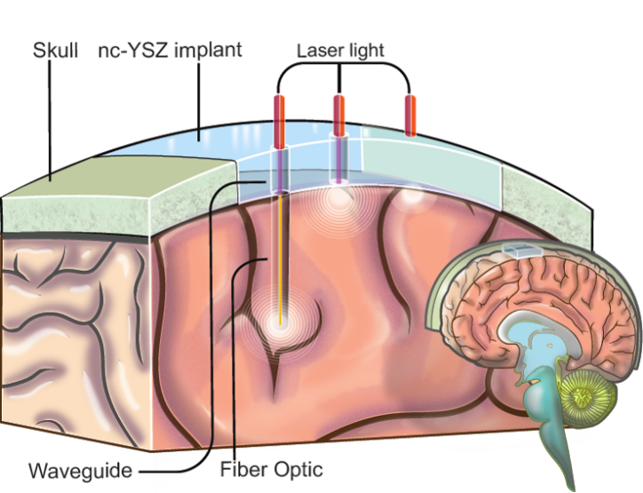

<section id="overview" class="wrapper">
    <div class="inner">
        <header class="align-center">
            <h2>Overview</h2>
        </header>
        <div class="flex flex-2">
            <article>
                <header>
                    <h3>About</h3>
                </header>
                <p style="color: #000">
                Stemming from multidisciplinary, international collaboration among material scientists, engineers, biologists, clinicians, and students from the University of California, Riverside and 3 top institutions in Mexico, the Center for the Synthesis of Advanced
                Materials for Biomedical Applications (C-SAMBA) seeks to synthesize, characterize, and test a new generation of nanocrystalline opto-ceramic materials for bioapplications.
                </p>
                <p style="color: #000">
                The primary application of these efforts is the development of a Window to the Brain (WttB) cranial implant, the transparency of which will allow for laser-based diagnosis and treatment of a wide variety of brain pathologies, without repeated craniectomies.
                </p>
                
            </article>
            <article>
                <header>
                    <h3>Collaborators</h3>
                </header>
                <ul>
                    <li>University of California-Riverside (UCR)</li>
                    <li>University of California-San Diego (UCSD)</li>
                    <li>Centro de Investigación Científica y Educación Superior de Ensenada (CICESE)</li>
                    <li>Instituto Nacional de Astrofísica, Óptica y Electrónica (INAOE)</li>
                    <li>Universidad Nacional Autónoma de México (UNAM)</li>
                </ul>
                <br>
                <header>
                    <h3>Research Areas</h3>
                </header>
                <ul>
                    <li><a href="manufacturing.html">Manufacturing</a></li>
                    <li><a href="nanopowdersynthesis.html">Nanopowder Synthesis</a></li>
                    <li><a href="material-fabrication.html">Material Fabrication</a></li>
                    <li><a href="material-characterization.html">Material Characterization</a></li>
                    <li><a href="fiber-development.html">Fiber Development and Coupling</a></li>
                    <li><a href="photonic-structures.html">Laser-written Photonic Structures</a></li>
                    <li><a href="biocompatability.html">Biocompatibility</a></li>
                    <li><a href="optical-image.html">Optical Imaging and Therapy</a></li>
                </ul>
                <hr />
                <ul>
                    <li><a href="ceramic-welding.html">Ceramic Welding</a></li>
                    <li><a href="optical-cavitation.html">Optical Cavitation</a></li>
                    <li><a href="laser-processing.html">Laser Processing</a></li>
                    <ul>
            </article>
        </div>
    </div>
</section>
